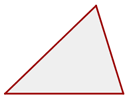
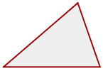
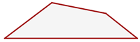

Resumen de polígonos
Resumen de polígonos
- Polígonos
- Polígonos regulares
- Polígonos inscritos
- Triángulos
- Mediana, baricentro...
- Cuadriláteros
Polígonos
Un polígono es la región del plano limitada por tres o más segmentos.
Elementos de un polígono:
1 Lados: Son los segmentos que lo limitan.
2 Vértices: Son los puntos donde concurren dos lados.
3 Ángulos interiores de un polígono: Son los determinados por dos lados consecutivos.
Suma de ángulos interiores de un polígono:
Si n es el número de lados de un polígono:
4 Diagonal: Son los segmentos que determinan dos vértices no consecutivos
Número de diagonales de un polígono:
Si n es el número de lados de un polígono::
Clasificación de los polígonos:
1 Según sus lados:
Triángulos
Tienen 3 lados.
Cuadriláteros
Tienen 4 lados.
Pentágonos
Tienen 5 lados.
Hexágonos
Tienen 6 lados.
Heptágonos
Tienen 7 lados.
Octágonos
Tienen 8 lados.
Eneágono
Tienen 9 lados.
Decágono
Tienen 10 lados.
Endecágono
Tienen 11 lados.
Dodecágono
Tienen 12 lados.
Tridecágono
Tienen 13 lados.
Tetradecágono
Tienen 14 lados.
Pentadecágono
Tienen 15 lados.
Hexadecágono
Tienen 16 lados.

Heptadecágono
Tienen 17 lados.
Octadecágono
Tienen 18 lados.
Eneadecágono
Tienen 19 lados.
Icoságono
Tienen 20 lados.
2 Según sus ángulos:
Convexos
Todos sus ángulos menores que 180°.
Todas sus diagonales son interiores.
Cóncavos
Si un ángulo mide más de 180°.
Si una de sus diagonales es exterior.
Polígonos regulares
Un polígono regular es el que tiene sus ángulos iguales y sus lados iguales.
Elementos de un polígono regular

1 Centro: Punto interior que equidista de cada vértice.
2 Radio: Es el segmento que va del centro a cada vértice.
3 Apotema: Distancia del centro al punto medio de un lado.
4 Ángulo central: Es el formado por dos radios consecutivos.
Si n es el número de lados de un polígono:
Polígonos inscritos
Un polígono está inscrito en una circunferencia si todos sus vértices están contenidos en ella.
1 Circunferencia circunscrita
Es la que toca a cada vértice del polígono.
Su centro equidista de todos los vértices.
Su radio es el radio del polígono.
2 Circunferencia inscrita
Es la que toca al polígono en el punto medio de cada lado.
Su centro equidista de todos los lados.
Su radio es la apotema del polígono.
Triángulos
Un triángulo es un polígono con tres lados.
1 Un lado de un triángulo es menor que la suma de los otros dos y mayor que su diferencia.
2 La suma de los ángulos interiores de un triángulo es igual a 180°.
3 El valor de un ángulo exterior es igual a la suma de los dos interiores no adyacentes.
Tipos de triángulos
1 Según sus lados:
Triángulo equilátero
Tres lados iguales.

Triángulo isósceles
Dos lados iguales.

Triángulo escaleno
Tres lados desiguales.
2 Según sus ángulos:
Triángulo acutángulo
Tres ángulos agudos
Triángulo rectángulo
Un ángulo recto. El lado mayor es la hipotenusa. Los lados menores son los catetos.

Triángulo obtusángulo
Un ángulo obtuso.

Mediana, baricentro...
Alturas de un triángulo
Altura es cada una de las rectas perpendiculares trazadas desde un vértice al lado opuesto (o su prolongación).
Ortocentro
Es el punto de corte de las tres alturas.

Medianas de un triángulo
Mediana es cada una de las rectas que une el punto medio de un lado con el vértice opuesto.
Baricentro
Es el punto de corte de las tres medianas.
El baricentro divide a cada mediana en dos segmentos, el segmento que une el baricentro con el vértice mide el doble que el segmento que une baricentro con el punto medio del lado opuesto.
Mediatrices de un triángulo
Mediatriz es cada una de las rectas perpendiculares trazadas a un lado por su punto medio.
Circuncentro
Es el punto de corte de las tres mediatrices.
Es el centro de una circunferencia circunscrita al triángulo.
Bisectrices de un triángulo
Bisectriz es cada una de las rectas que divide a un ángulo en dos ángulos iguales.
Incentro
Es el punto de corte de las tres bisetrices.
Es el centro de una circunferencia inscrita en el triángulo.
Recta de Euler
El ortocentro, el baricentro y el circuncentro de un triángulo no equilátero están alineados; es decir, pertenecen a la misma recta, llamada recta de Euler.
Cuadriláteros
Los cuadriláteros son polígonos de cuatro lados.
La suma de los ángulos interiores de un cuadrilátero es igual a 360°.
Clasificación de cuadriláteros
1 Paralelogramos: Cuadriláteros que tienen los lados paralelos dos a dos. Se clasifican en:
Cuadrado
Tiene los 4 lados iguales y los 4 ángulos rectos.
Rectángulo
Tiene lados iguales dos a dos y los 4 ángulos rectos.
Rombo
Tiene los cuatro lados iguales.

2 Trapecios: Cuadriláteros que tienen dos lados paralelos, llamados base mayor y base menor. Se clasifican en:
Trapecio rectángulo
Tiene un ángulo recto.
Trapecio isósceles
Tiene dos lados no paralelos iguales.
Trapecio escaleno
No tiene ningún lado igual ni ángulo recto.
Trapezoides
Cuadriláteros que no tiene ningún lado igual ni paralelo.
